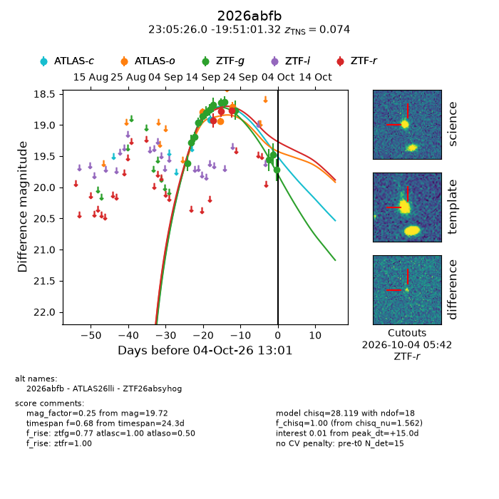
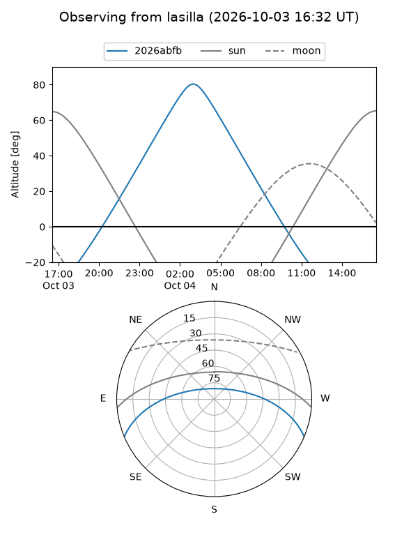
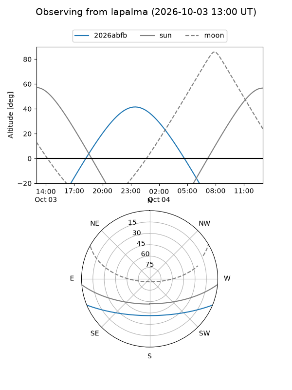
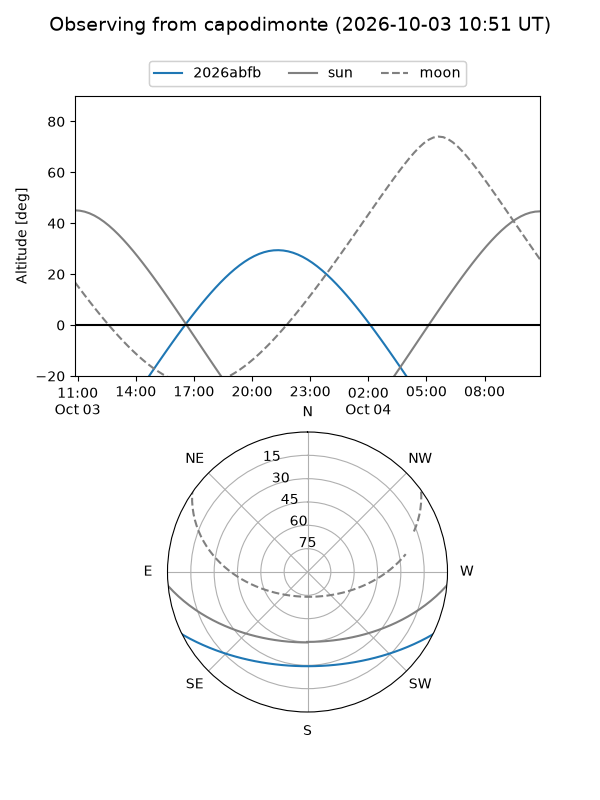
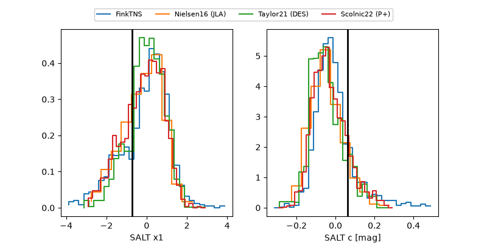

2026abfb
Target 2026abfb at 2026-10-04 13:03
Aliases and brokers:
FINK-ZTF: ztf.fink-portal.org/ZTF26absyhog
Lasair-ZTF: lasair-ztf.lsst.ac.uk/objects/ZTF26absyhog
ALeRCE-ZTF: alerce.online/object/ZTF26absyhog
YSE-PZ: ziggy.ucolick.org/yse/transient_detail/2026abfb
TNS name: wis-tns.org/object/2026abfb
Direct TNS query: direct search
alt names
ZTF26absyhog (ztf,fink_ztf)
2026abfb (tns,yse)
ATLAS26lli (atlas)
Coordinates:
equatorial (ra, dec) = 346.3585,-19.85037
equatorial (HMS+DMS) = 23:05:26.03,-19:51:01.32
galactic (l, b) = (43.9366,-64.68701)
Flags:
TNS type: SN Ia
TNS redshift: 0.0740
peak dt: +15.0
Photometry:
last atlasc=18.91, atlaso=18.71, ztfg=19.72, ztfr=18.77
2 atlasc, 3 atlaso, 14 ztfg, 3 ztfr detections
Lightcurve

Visibility



Additional plots
